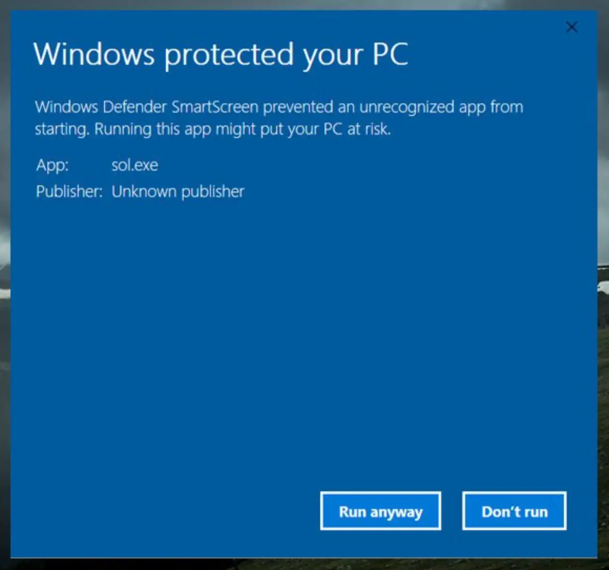

03 // DOWNLOAD · WINDOWS
Download Organizr for Windows.
Download the installer and follow the steps below to complete the installation. Organizr is a new app, so Windows may show a security alert — it's completely safe to proceed.
Download the installer
Click the button below to download the Organizr installer for Windows.
The file is an .exe setup — run it after downloading.
Before you run it: Windows will show a SmartScreen security alert (see below). This is normal for new apps — follow steps 2 and 3 to proceed.

Windows SmartScreen alert
When you run the installer, Windows Defender SmartScreen may show a warning that says "Windows protected your PC". This happens because Organizr is a brand-new app and hasn't yet built a reputation score with Microsoft — not because it's harmful.
Click "More info" in the dialog to reveal the next option.
Click "Run anyway"
After clicking "More info", a "Run anyway" button will appear at the bottom of the dialog. Click it to start the installation.
Organizr will install in seconds. No account required — all your data stays on your device.